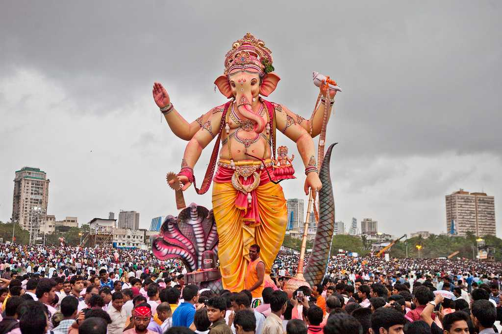
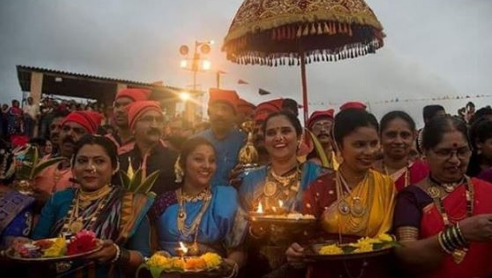

Lord Ganesha, the deity of wisdom, is the most loved in Maharashtra and Ganesh Chaturthi is celebrated with the most grandeur. In August, preparations for the auspicious day when Lord Ganesh was born – begin with great enthusiasm. It is an 11-day festival, beginning with the installation of beautifully sculpted Ganesh idols in homes and large pandals, colorfully decorated, depicting religious and cultural themes.
The Ganesh idols are worshiped and many cultural events are organised. People throng the huge pandals to catch a glimpse of their favorite God. Visits to friends and family to offer prayers and join the celebrations, and partake some delicious food are looked forward to by all. It is also a great chance to gorge on modaks (steamed rice-flour dumplings with a succulent coconut and ghee filling), since they are considered to be the Lord’s favorite food. On the 11th day comes the time to bid farewell to Ganesha. People take the idols in procession with an accompaniment of music and dance for immersion in the sea or nearby river or lake.

In the month of Shravan, the full moon day is celebrated in different parts of Maharashtra and is known as Narali Pournima. During the monsoon, the sea is unsafe for fishing, and hence fishermen do not venture into the sea. Narali Pournima marks the end of the monsoon and the beginning of the new fishing season and fishermen appease the sea god before sailing out in their beautifully decorated boats.
‘Naral’ means ‘coconut’, and ‘Pournmia’ is the full-moon day when offerings of coconuts are made to the sea god on this day. The fisher-folk make offer coconuts and prayers to the sea-god and seek his blessings to prevent any untoward incidents, as they begin the fishing season. Sweets made from coconut are savoured on this day. Narali Pournima also coincides with the festival of Raksha Bandhan, when brothers vow to protect their sisters and the sisters tie a thread on their brother’s wrist as a sign of respect and affection.
Also known as Uttarayan or Pongal in other parts of the country, Makar Sankranti is the celebration of the winter solstice. It is the celebration of the advent of spring, the day when the sun leaves the southern hemisphere and begins its journey in the northern hemisphere. Following the glorious tradition of kite-flying, there can be plenty of kites seen dotting the sky on this day. Meals of gulachi poli (jaggery flatbreads) are prepared to keep everyone warm.
Small sweet laddoos (balls) made from sesame are especially prepared for this day. People visit the homes of friends and relatives, and say “Til gul ghya ani god god bola“, meaning “Accept this til-gul and speak sweetly”. It is a day when everyone agrees to forget old hostilities and differences, and move forward with mutual love and respect. Another popular cultural celebration is having a pooja for newly married women and newborn infants. They are dressed in black and adorned with ornaments made from small sugary sweets, and everyone enjoys with song, dance and merry-making.
 Also known as Uttarayan or Pongal in other parts of the country, Makar Sankranti is the celebration of the winter solstice. It is the celebration of the advent of spring, the day when the sun leaves the southern hemisphere and begins its journey in the northern hemisphere. Following the glorious tradition of kite-flying, there can be plenty of kites seen dotting the sky on this day. Meals of gulachi poli (jaggery flatbreads) are prepared to keep everyone warm.
Small sweet laddoos (balls) made from sesame are especially prepared for this day. People visit the homes of friends and relatives, and say “Til gul ghya ani god god bola“, meaning “Accept this til-gul and speak sweetly”. It is a day when everyone agrees to forget old hostilities and differences, and move forward with mutual love and respect. Another popular cultural celebration is having a pooja for newly married women and newborn infants. They are dressed in black and adorned with ornaments made from small sugary sweets, and everyone enjoys with song, dance and merry-making.
Also known as Uttarayan or Pongal in other parts of the country, Makar Sankranti is the celebration of the winter solstice. It is the celebration of the advent of spring, the day when the sun leaves the southern hemisphere and begins its journey in the northern hemisphere. Following the glorious tradition of kite-flying, there can be plenty of kites seen dotting the sky on this day. Meals of gulachi poli (jaggery flatbreads) are prepared to keep everyone warm.
Small sweet laddoos (balls) made from sesame are especially prepared for this day. People visit the homes of friends and relatives, and say “Til gul ghya ani god god bola“, meaning “Accept this til-gul and speak sweetly”. It is a day when everyone agrees to forget old hostilities and differences, and move forward with mutual love and respect. Another popular cultural celebration is having a pooja for newly married women and newborn infants. They are dressed in black and adorned with ornaments made from small sugary sweets, and everyone enjoys with song, dance and merry-making.